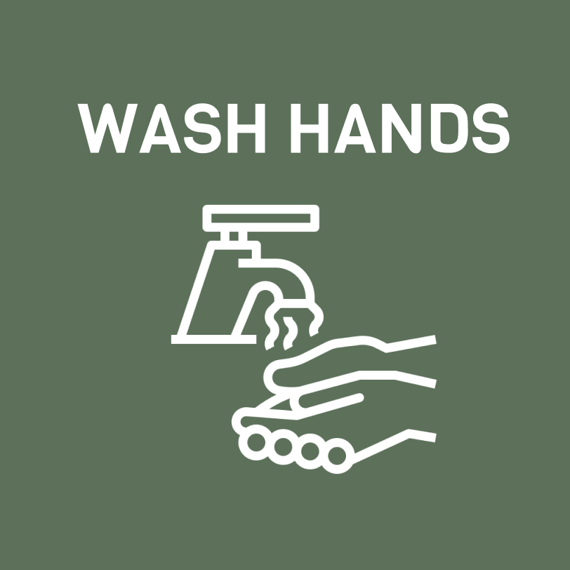
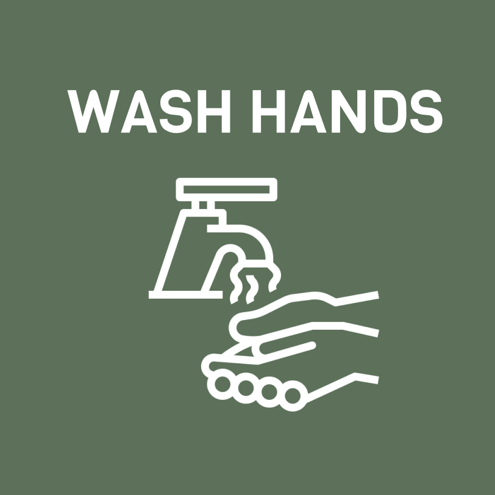

About Covid-19
What is Coronavirus disease 2019 or COVID-19?
It is an ongoing (as of April 2020) infectious disease caused by a virus strain that results in a respiratory illness.
From where does it originate?
That is still to be determined, but the disease was first identified back in December 2019, in the capital of China's Hubei province, Wuhan.
What are the symptoms?
The most common symptom include fever, cough and shortness of breath. Other symptoms may include fatigue, muscle pain and sore throat. Some people will not get any symptoms at all. The time from exposure to onset of symptoms may very from 2-14 days.
How does it spread?
The virus is primarily spread between close contact, often via small droplets produced by coughing, sneezing and talking. People may also become infected by touching a contaminated surface and then touching their eyes, nose, or mouth. The virus can survive on surfaces for up to 72 hours.
How do I and others prevent from getting infected or spreading the virus?
Follow these five general rules shown below! You should always stay up to date with the authorities of your residence's guidelines, laws and recommendations during these times.


 
